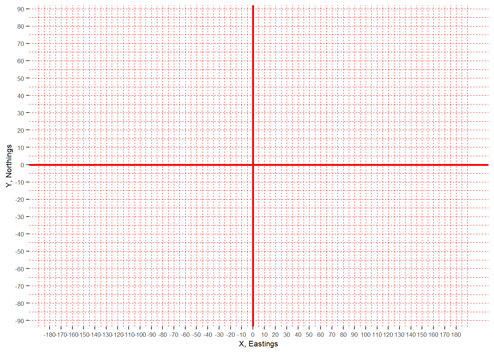

Introduction to Coordinate Reference Systems
A coordinate reference system (CRS) is a coordinate-based local, regional or global system used to locate geographical features that occupy a position in space. (Coordinate reference systems and spatial reference systems (SRS) are synonyms and are commonly interchanged.)
The two types of coordinate reference systems in GIS are:
Geographic coordinate systems (GCS)
Projected coordinate systems (PCS)
For example in ArcMap, when a spatial data is created or added, the coordinate or spatial references may need to be set.

Both geographic coordinate and projected coordinate systems will come with many options.

So let’s discuss what these are separately.
Geographic coordinate systems
Geographic coordinate systems are used to define locations on the three-dimensional Earth. GCS shows where a certain location is on the surface of the Earth.

Geographic coordinate systems consist of:
Angular units (degrees)
Geodesy
Geodesy is the science associated with the measurement and portrayal of the Earth. Geodesy is used to determine the size and shape of the Earth, as well its features (e.g. mountains) and elements (e.g. terrestrial gravity and tides).
Ellipsoid
Geodesists build simple mathematical models to be able to capture the shape of the Earth and its features. For this, they have adopted the ellipsoid (or spheroid) as the most basic model. This is also referred to as geometric model.

The ellipsoid is an idealised representation of the physical Earth, with a completely smooth, uninterrupted surface.
Note
Since the Earth is spinning around its axis, there is a slight flattening at the poles and a slight bulging at the equator, hence the ellipsoid is used as a model.
The ellipsoid has a longer semi-major axis (a) and a shorter semi-minor axis (b). These axes allow to quantify and standardise the amount of flattening (f = (a-b)/a) that occurs due to Earth’s rotation.

In addition to the flattening and bulging, the different topological features are also account for Earth’s irregular, lumpy shape.

So let’s imagine the modelling process using the ellipsoid.
The ellipsoid placed on top of this lumpy shape won’t be able to perfectly model the surface all around. It will only “fit” with the surface at a particular area. This is why the ellipsoid can only be applied at one part of the Earth at the time.

To be able to specify at which part of the planet the ellipsoid is applied to, datums are used.
Datum
Horizontal datums model positions on the surface of the Earth using latitude (y) and longitude (x), while vertical datums are used to model elevations (z) accounting for terrain, bathymetry, water level and man-made structures.
Horizontal datum
A horizontal datum uses a reference ellipsoid that is “pinned” to the Earth at a fixed surface location. This reference location is called marker or benchmark.


and a marker location in Kansas, USA (Source: Wikipedia)
This marker is then used to assign angular units of longitude and latitude to locations at that particular area of the Earth.

There are different datums designed for different parts of the world. In fact, almost every country has its own datum (local datum). For example, the datum NAD83 (North American Datum 1983) is used to model the North American continent and the NZGD2000 (New Zealand Geodetic Datum 2000) is used for New Zealand and its offshore islands.


The most widely used and well-known datum is called WGS84 or World Geodetic System 84.
WGS84 is global datum format. It uses the centre of the Earth to connect the ellipsoid and provides a generalised model for the whole of the planet.

Vertical datum
As previously discussed, the shape of the Earth is not perfectly round and its surface is quite uneven: there are different topographic features (e.g. mountains, valleys, trenches). This uneven surface has an effect on Earth’s gravity: higher density rocks will pull water creating a bulge, while water is drawn away from lower density rocks. Thus, gravity is different at different parts of the Earth.
To overcome these gravitational differences, geodesists use the geoid to measure surface elevation. The geoid is also known as gravity-related model.
(Use to tools on the left to interact with the model)
(Source: Geoid viewer)
Removing the effects of the winds and tides, and in fact land masses that cause gravitational differences, the geoid takes the global mean sea level as a base (as if the sea would uniformly cover the planet) to measure surface elevations.

At a certain location, vertical height will be given in reference to the geoid.
The above mentioned WGS84 is used by Global Positioning System (GPS) satellites and can be used globally to obtain latitude, longitude and elevation coordinates at any location. However, at specific areas local datums can still provide better coverage than WGS84. For example, OSGB36 (Ordnance Survey National Grid reference system) is a better approximation to the geoid covering the British Isles than the global WGS84.
Note
Maps made using different datums will give different coordinates for the same position. This is called ‘datum shift’.
Angular units
GCS use angular units to describe a location on the Earth’s surface. (Remember, this is based on the ellipsoid and the geoid.) These are the latitude (φ) and longitude (λ) displayed on a spherical coordinate system and are measured in degrees.

Latitude lines run parallel to the equator and divide the Earth into 180 equally spaced sections from north to south.

Longitude lines run perpendicular to the equator and converge at the poles. Longitudes are measured from zero to 180 degrees east or west of the prime meridian (0 degrees running through Greenwich, UK).

This network of lines representing meridians and parallels are also known as graticules.

The classic representation of latitude and longitude coordinates is in degrees, minutes and seconds (DMS).
The example below shows London on the map with the coordinates displayed in degrees, minutes and seconds.
The degrees, minutes and seconds format uses the sexagesimal (base 60) system which is difficult to use in the digital world. Instead, the decimal degrees format (base 10 system) is used. So let’s see how to convert degrees, minutes and seconds to decimal degrees, and decimal degrees to degrees, minutes and seconds.
DMS to DD
| Location | DMS (degrees, minutes and seconds) | DD (decimal degrees) |
|---|---|---|
| London, UK | 51° 30’ 35.5140’’ N, 0° 7’ 5.1312’’ W | ??? |
Leaving the degree value untouched, divide the minute with 60 and the second with 3600. Then, add them up (degree + minute + second). The final value will be the decimal degrees format.
Let’s take the latitude and latitude values separately from the above example.
Latitude: 51 degrees 30 minutes 35.5140 seconds
D (51 degrees) + M (30/60) + S (35.5140/3600) = 51.509865°
Longitude: 0 degrees 7 minutes 5.1312 seconds
D (0 degrees) + M (7/60) + S (5.1312/3600) = 0.118092°
| Location | DMS (degrees, minutes and seconds) | DD (decimal degrees) |
|---|---|---|
| London, UK | 51° 30’ 35.5140’’ N, 0° 7’ 5.1312’’ W | 51.509865°, 0.11809° |
DD to DMS
Here, let’s take the latitude example only.
Latitude: 51.509865
1, The degree value remains the same:
Degrees = 51
2, The decimal value gets multiplied by 60 and the minute will be the number before the decimal separator:
0.509865x60 = 30.5919
Minutes = 30
3, The remaining number after the decimal separator gets multiplied by 60 as well. This will give the second.
0.5919x60 = 35.514
Seconds = 35.514
51° 30’ 35.514’’
When using DMS and DD, directions are specified by using N, E, S and W or +/-, respectively (i.e. y above the equator and x east of the prime meridian are positive, and y below the equator and x west of the prime meridian are negative).
Apart from DMS and DD, there is also a third format to display locations. This is called degrees decimal minutes (DDM).
Degrees, minutes and seconds can also be converted to degrees decimal minutes.
DMS to DDM
Using the same example, starting from the back:
Latitude: 51 degrees 30 minutes 35.5140 seconds
1, Divide the seconds by 60:
35.5140/60 = 0.5919
2, Add the minute:
30 + 0.5919 = 30.5919
3, The degree value remains the same:
51°30.5919’
Longitude: 0 degrees 7 minutes 5.1312 seconds
0°7.08552’
| Location | DMS (degrees, minutes and seconds) | DD (decimal degrees) | DDM (degrees decimal minutes) |
|---|---|---|---|
| London, UK | 51° 30’ 35.5140’’ N, 0° 7’ 5.1312’’ W | 51.509865°, 0.11809° | 51°30.5919’, 0°7.08552’ |
Tip
The website PGC Coordinate Converter is useful to convert all three formats.
Various GPS phone apps will also display location in all three formats as well as in UTM.
Google Earth Pro also gives the option to display and convert all formats (Tools –> Options).

Distances
As mentioned before, latitude and longitude are applied to the three-dimensional Earth to describe location. However, they are not very useful to measure linear distances. This is because of the oblate spheroid shape of the Earth.
Latitude lines are concentric circles that become smaller near the poles while the distance between them remains roughly the same. (The distance between two degrees is slightly bigger at the poles than at the equator because of the flattening. The average distance between two latitude degrees is 111.4km.)
| Latitude | Poles | 80° N/S | 40° N/S | Equator |
|---|---|---|---|---|
| Distance between two degrees | 111.69km | 111.66km | 111.03km | 110.57km |

Longitude lines converge at the poles and thus the distance between two meridians is different at every parallel.
| Longitude | Poles | 80° N/S | 40° N/S | Equator |
|---|---|---|---|---|
| Distance between two degrees | - | 19.39km | 85.39km | 111.32km |

The equator is the only place where the linear distance corresponding to one degree latitude is approximately equal the distance corresponding to one degree longitude. (Note that the illustration below shows the latitude and longitude lines at every 10° for easier visualisation.)

Note
Formula to calculate distances at one minute latitude and at one second latitude at the equator:
1°= 110.57km
1’ = 110.57/60 = 1.84283km
1’’ = 1.84283/60 = 30.7138m
The same formula applies at one degree/minute/second at all latitude and longitude lines, except at the poles where the longitude lines converge.
This issue of different linear distances at different latitudes and longitudes is bridged and accounted for by most GIS software and discussed in the projected coordinate system section below.
Projected coordinate system
Whilst GCS shows where a certain location is on the Earth’s surface, a projected coordinate system (PCS) shows how the three-dimensional Earth should be projected on a two-dimensional flat surface to accurately display that same location.

Projected coordinate systems consist of:
Projection method (e.g. Mercator or Robinson)
Projection settings (angular and linear, used for the projection method)
Linear units on a flat surface (meters, feet or nautical miles)
The geographic coordinate system was covered above so let’s start with the projection methods.
Projection methods
As it was discussed in the Introduction to Cartography chapter, when the three-dimensional spherical Earth is projected onto a two-dimensional flat surface, distortion occurs affecting shape, area, distance, direction and scale. The projection method used will preserve and/or distort different attributes.
Generally, the three types of projections used are:
- Cylindrical (normal, transverse, oblique)
These projections are used for the entire earth and for ares at the equator.
- Conical (secant, tangent)
These projections are used for the mid-latitudes.
- Planar/Azimuthal (Gnomonic, Stereographic, Orthographic)
These projections are used for the poles.

Within these projection types, there are different projection methods (e.g. Lambert Equal Area Conic, Mercator, Robinson or Gall-Peter) that can be used to depending on the area and the data displayed. (Some examples were discussed in detail in the Introduction to Cartography chapter.)
Cartesian coordinate system
Whilst, the angular units (degrees) are useful to pinpoint a location on the surface of the three-dimensional Earth, they cannot be used on a flat surface. So GIS uses mathematical equations to convert angular units (see the section above on linear distances) and project them on a flat surface, called the Cartesian coordinate system.
The Cartesian coordinate system uses two axes:
Horizontal (X): runs from east to west, ranging from +180° to -180°.
Vertical (y) runs from north to south, ranging from +90° to -90°.
The point at which the axes intersect is called the origin (0,0). Locations are defined relative to the origin, using the notation (x,y).
Note
Drawing attention to the nomenclature differences:
Latitude and longitude are expressed in degrees and are used in GPS. Upon projection, however, the latitude and longitude are converted to and named as Eastings/Northings or X/Y coordinates and are measured in linear units (meters, feet or nautical miles).
Reference resources
Free courses and tutorials
Videos
Other
- A guide to coordinate systems in Great Britain
- Coordinate Systems: What’s the Difference?
- Geographic coordinate systems
- Geographic vs Projected Coordinate Systems
- How to measure Latitude & Longitude
- Latitude and Longitude Finder
- List of supported map projections in ArcMap
- Map Projections and Coordinate Systems
- Map Projection Parameters
- National Geodetic Survey Data Explorer
- Projections and Coordinate Systems
- Projection parameters
- Spatial reference
- Spatial referencing and coordinate systems
- UTM Grid Zones of the World
- What is the geoid?
- What is the Prime Meridian and why is it in Greenwich?